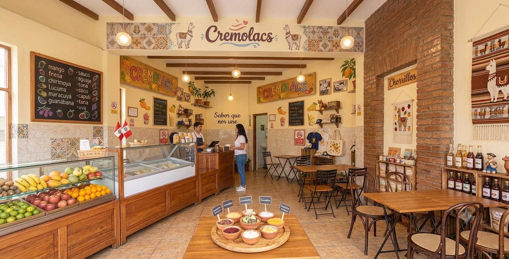
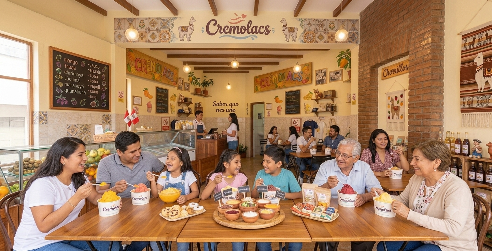

Conoce más sobre la tradición y el sabor de Cremolacs

Nacimos con una promesa simple pero poderosa: "Sabor que nos une". En nuestro rincón de Chorrillos, transformamos las mejores frutas seleccionadas en cremoladas artesanales llenas de frescura, tradición y un pedacito de nuestro corazón en cada vaso.
Más que un postre helado, buscamos crear momentos inolvidables. Desde los clásicos de siempre como mango, fresa y lúcuma, hasta los sabores más tradicionales como el aguaje y la guanábana. Aquí, cada generación encuentra su sabor favorito para disfrutar juntos.

Ven a visitarnos y disfruta del ambiente más fresco